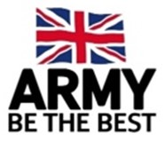
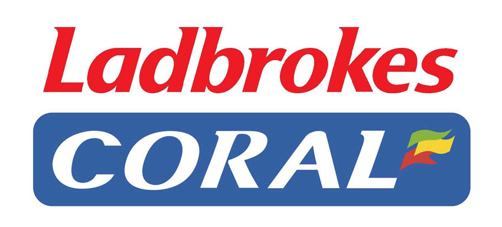
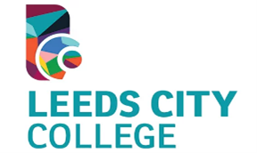

Akash Gurung
Personal Profile
As an IT graduate with a robust foundation in software development and a unique background in Human Resources from my distinguished service in the British Army, I offer a rare combination of technical expertise and proven leadership. My comprehensive hands-on training at Ten10 Academy has honed my skills in Java programming, test automation, and a wide array of IT technologies, preparing me to tackle even the most complex technical challenges with confidence.The adaptability and problem-solving abilities I’ve cultivated under high-pressure environments—whether in military operations or software development—allow me to approach challenges with both creativity and precision. Having excelled in leadership roles within the army, I thrive in collaborative, fast-paced environments, where clear communication and strategic thinking are crucial.Fueled by my passion for technology and a relentless drive for innovation, I am eager to leverage my diverse skill set to deliver cutting-edge solutions, enhance operational efficiency, and contribute meaningfully to the tech industry. With my unique background and determination, I am confident in my ability to add significant value to any software engineering team.
Employment History
Ten10 - Technology Consultant (2024 – Present)
- Focused on improving my programming skills in both Java and JavaScript, with an emphasis on writing code that’s reliable and scalable.
- Got hands-on experience with software testing and test automation, ensuring that applications work as they should and meet the necessary quality standards.
- Used DevOps tools to make the development process smoother, focusing a lot on automating repetitive tasks and integrating workflows.
- Applied agile methods to help the team work better, stay flexible, and complete projects more efficiently.
- Worked directly with APIs, web services, databases, and SQL to ensure data flows seamlessly between systems and supports our applications correctly.
- Developed a big-picture view of IT enterprise systems, learning how they’re designed, implemented, and managed in real-world scenarios.
British Army - Human Resources Specialist (2020 – 2024)

- Managed HR operations for over 130 soldiers, ensuring smooth administration and payroll processes.
- Prepared HR and payroll documents for annual audits with a strong focus on accuracy and compliance, ensuring all regulatory standards were met.
- Conducted audits of the monthly salary review, driving efficiency improvements.
- Produced analytical reports on pay, allowances, and attrition to guide decision-making.
- Led the payroll process, ensuring timely and precise payments.
- Recognized with the prestigious Brigadier’s Coin for exceptional leadership and problem-solving skills, demonstrating resilience and adaptability in challenging environments.
Customer Service Advisor, National Express (2020 – 2021)
- Delivered exceptional customer service, providing clear and accurate information to passengers, ensuring a positive travel experience.
- Proactively assisted drivers with boarding and luggage management, improving efficiency and minimizing delays.
- Consistently upheld the highest standards of service, earning praise from customers and recognition for dedication to customer satisfaction.
- Operated and optimized internal tracking systems to ensure smooth coordination and timely coach services.
- Successfully managed coach movement within the station, consistently exceeding Health and Safety standards and enhancing operational safety.
Assistant Manager, Ladbrokes Coral Group, London (2016-2019)

- Led the efficient handling of customer requests, resolving issues promptly to ensure a seamless customer experience.
- Collaborated with multiple departments to deliver accurate and insightful information, enhancing customer support.
- Consistently achieved top-tier customer satisfaction scores (KPI) through a focus on service excellence.
- Managed daily financial operations, including cash handling, banking, inventory control, and bookkeeping, ensuring accuracy and compliance.
- Trained and mentored new hires, fostering a high-performing team culture and driving continuous improvement.
Crew Trainer, McDonald’s, Leeds (2010-2014)
- Led the training and development of crew members, enhancing team performance and ensuring consistent service quality.
- Collaborated effectively within a fast-paced environment, meeting and exceeding management and team expectations.
- Delivered excellent customer service by efficiently taking orders and resolving customer concerns with professionalism.
Education
2014 – 2018: Bachelor of Science in Computing
University of Greenwich
Grade: Upper Second Class (2:1) / GPA of 3.6

2012 – 2014: BTEC Level 3 Diploma in IT (Software Development)
Leeds City College
Grade: Distinction*Distinction / GPA of 4.0
Language
Hobbies & Interests
- Hiking
- Cooking
- Tech Enthusiast